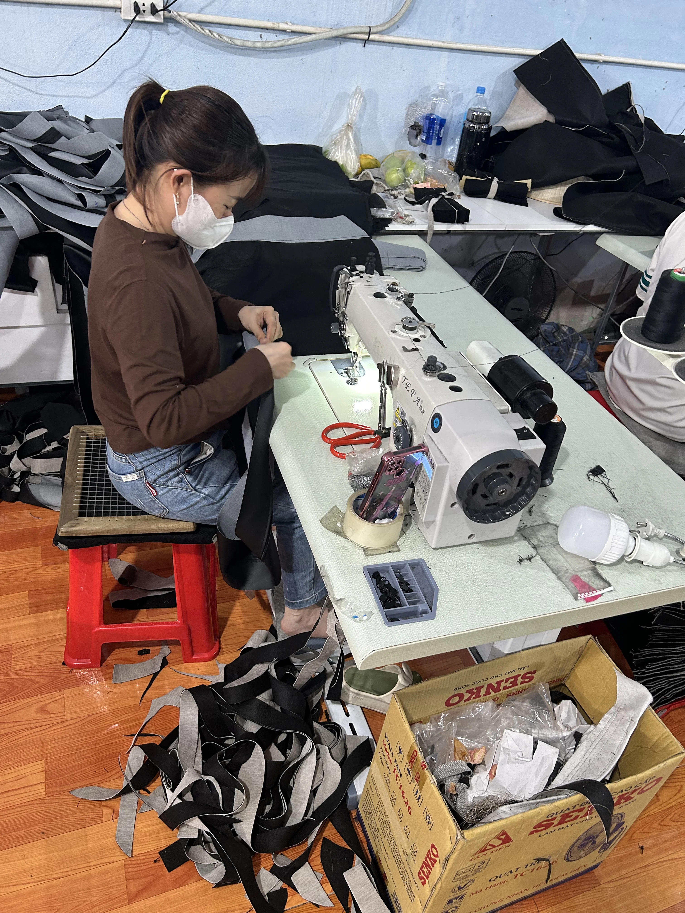
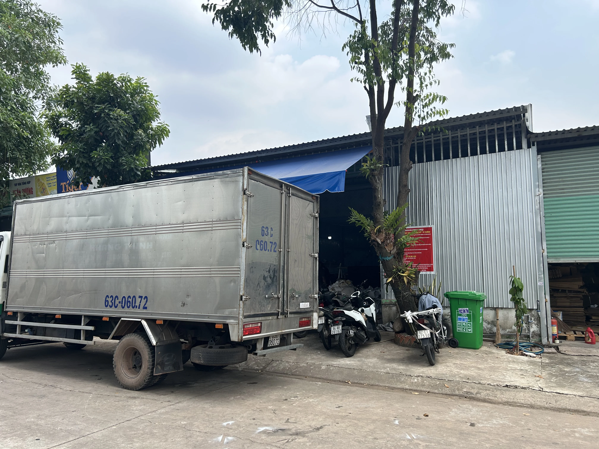
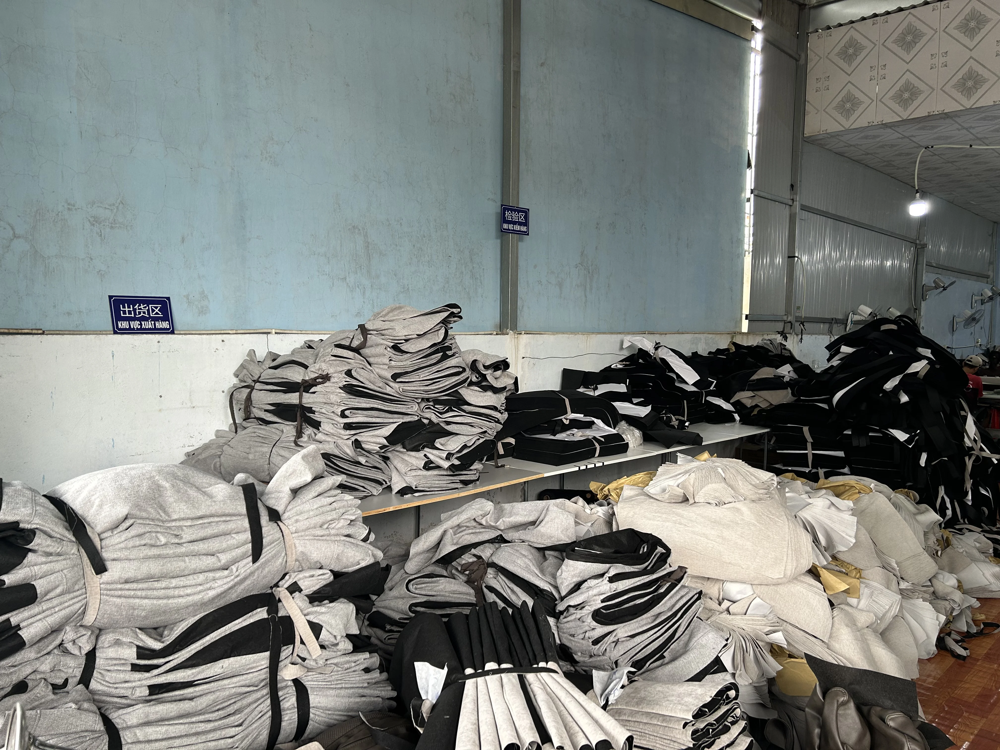
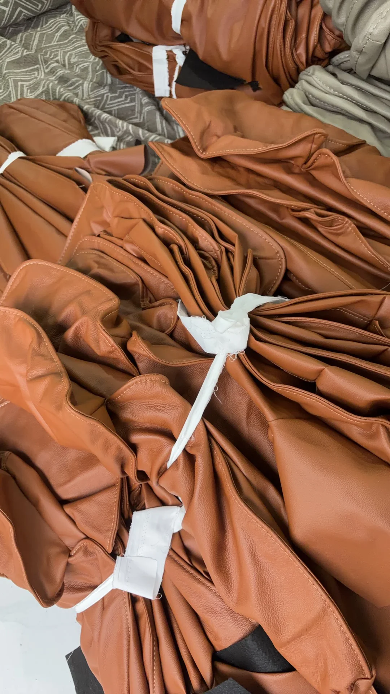
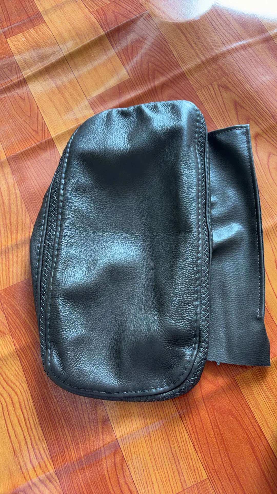
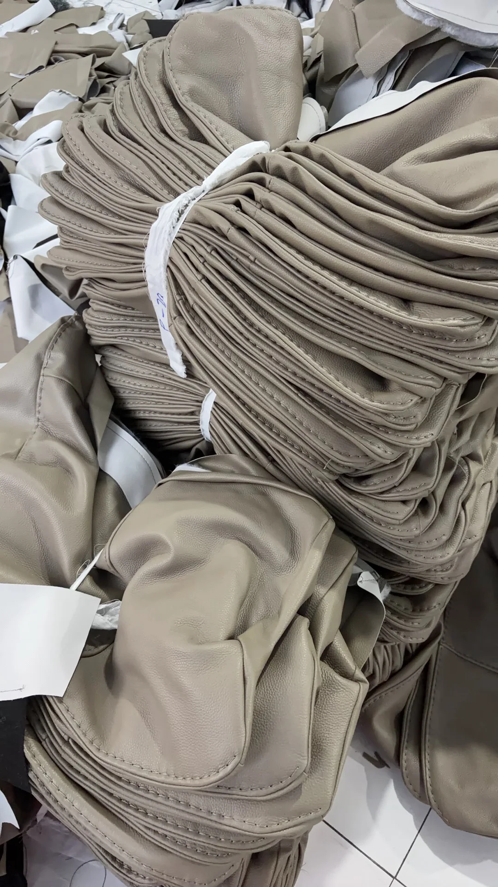
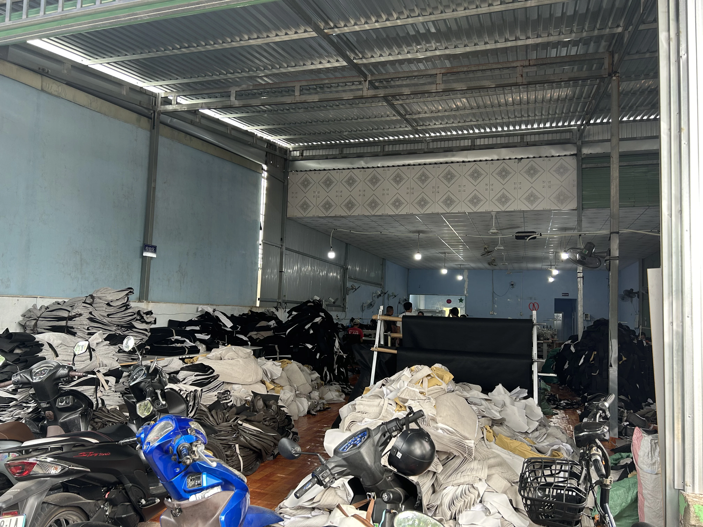

Precision sewing for leather sofa covers, fabric upholstery, and car seat cushions
We sew genuine leather sofa covers, fabric covers, car seat cushions, and other padded parts based on customer sample or specification. From our workshop in Ho Chi Minh City, we work directly with customers on material handling, seam details, delivery timing, and final inspection before shipment.

Contact
Contact the factory directly
If you need a sofa cover sewing factory in Ho Chi Minh City or a responsive upholstery partner in Vietnam, contact us directly to discuss specifications and schedule.
VIETNAM X PROCESSING COMPANY LIMITED
Phone: 0988 218 301
Address: Unit 2, Lot 141, Ni13 Street, Quarter 1, Thoi Hoa Ward, Ho Chi Minh City, Vietnam
View on MapOpen during regular factory hours.
- Monday07:30 - 17:00
- Tuesday07:30 - 17:00
- Wednesday07:30 - 17:00
- Thursday07:30 - 17:00
- Friday07:30 - 17:00
- Saturday07:30 - 17:00
- Sunday07:30 - 17:00
- Leather and fabric sofa cover sewing.
- Car seat cushions and seating components.
- Custom padded sewing projects.
- Orders that require careful visible seam quality.
About Us
Services, workflow, workshop, and real production images
In this section, we show what we sew, how projects move forward, and what the workshop actually looks like day to day.
Services
Main sewing scope for upholstery and padded products
Most orders we handle involve sofa covers, vehicle seating parts, or other padded products where seam control, shape, and delivery timing all matter.
Genuine leather and fabric sofa covers
We handle sofa cover sewing that requires clean seam lines, controlled corner finishing, and a consistent surface appearance for residential, showroom, and commercial furniture applications.
Car seat cushions and seat cover parts
We sew car seat cushions, headrest covers, and related padded components where shape accuracy, seam strength, and surface neatness are important.
Custom padded sewing based on your sample
We can work from an existing sample, pattern, or reference image so we can align material handling, sewing details, and expected finishing standards before production starts.
Workflow
A clear project flow for upholstery sewing orders
We can start from a physical sample, a pattern, or a few reference photos. From there, we align materials, visible details, and the inspection points before production begins.
1
Requirement Discussion
We confirm product type, materials, estimated quantity, and the finishing standard expected for the order.
2
Sample & Spec Review
We review shape, edge treatment, joining points, and the visible details that matter before sewing starts.
3
Sewing & Inspection
We move the order through sewing and visual inspection with close attention to seam lines and surface consistency.
4
On-Time Delivery
After final preparation, goods are packed and scheduled for delivery according to the agreed timeline.
Workshop
Ho Chi Minh City workshop and practical production strengths
Buyers usually ask us three things first: how fast we respond, how closely we follow the sample, and whether delivery stays on track. Those are the same points we watch closely on the factory side.
We regularly handle sofa covers, car seat cushions, and other padded upholstery work. Materials, work-in-progress pieces, and finished parts are separated by stage so sewing and inspection stay easier to manage.

Based in Thoi Hoa Ward, Ho Chi Minh City, we can work closely with local customers and still support buyers in other parts of Vietnam who need a stable sewing partner.
Careful seam finishing
We focus on even stitch lines, controlled folds, and clean visible surfaces on upholstery products.
Local response speed
Being in Ho Chi Minh City helps shorten communication time for sample checks, image review, and delivery coordination.
Inspection before shipment
Visible surfaces and stitching are checked before goods are prepared for delivery.
Gallery
Workshop, semi-finished goods, and finished sewing details
We include these photos so buyers can see more clearly how the workshop runs, how materials are staged, and what finished upholstery details actually look like.









FAQ
Common questions from buyers looking for a sewing factory in Vietnam
These are the questions we hear most often from customers comparing upholstery sewing factories in Ho Chi Minh City and across Vietnam.
What products do you sew?
We specialize in genuine leather sofa covers, fabric sofa covers, car seat cushions, headrest covers, and other padded upholstery products that require careful seam finishing.
Can you work from our sample or pattern?
Yes. We can work from a physical sample, a pattern, or reference images so the sewing approach and expected finish are aligned before production.
Which areas do you serve?
We are based in Ho Chi Minh City for fast local coordination, and we also support customers in other parts of Vietnam who need an upholstery sewing partner.
How do we request a quotation?
Please call 0988 218 301 and share product type, material, quantity estimate, and any available sample or technical reference.